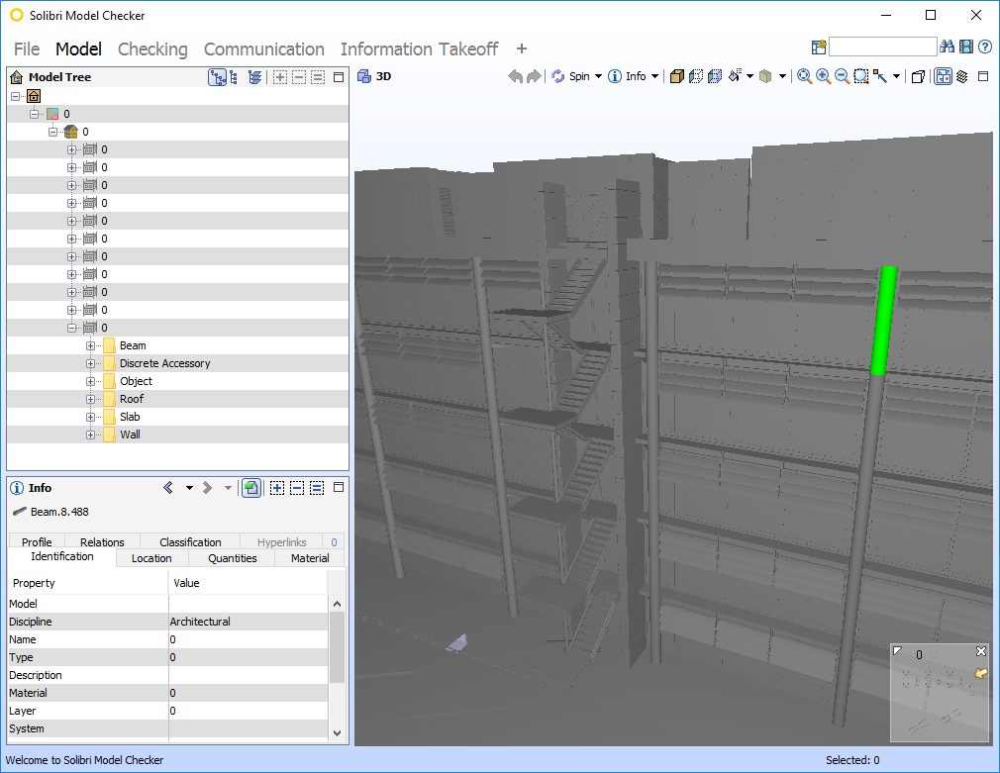

Within the architecture, engineering, and construction industry, we often share IFC files to transfer building information to others. IFC (Industry Foundation Classes) is an open standard for storing BIM information. This IFC file can be produced by software such as Revit, ArchiCAD, or SketchUp.
On occasion, however, we would like to strip out information from the
IFC. Perhaps there is some classified information that is stored in one
of the IFC properties, or perhaps you just need a clean set of a
geometry in the respective classes to work with. In this article, we
will assume that you want to obfuscate the IFC such that all geometric
information is retained (specifically, IfcBuildingElement subtypes and
IfcShapeRepresentation), but other BIM information is mangled.
This is a relatively easy task, and can be done with a standard text editor. IFC files are plain text files, which although generally do not lend themselves well to hand-editing, are quite easy to modify with regex. For this exercise, you will need Vim, which is the world's most advanced text editor which also happens to support regex commands, and not choke upon files which are many gigabytes in size. If you are not using Vim, you will need to convert the regex below to your own probably PCRE compliant flavour.
We'll take a look at stripping three types of data in the IFC: strings, non-strings, and the element classes themselves.
In the IFC format, apart from the file header, all strings represent
user data with the exception of those hardcoded in the
IfcShapeRepresentation (which really should be constants, ideally, but
hey). The one other slight exception to this are IfcGloballyUniqueId
strings which is recommended to be a unique 128-bit number, but since
all parsers generally ignore this it is safe to throw this baby out with
the bathwater. All string information are enclosed in single quotes
which makes stripping with regex trivial.
Non string information is a bit trickier, but generally we need to only care about RGB codes and transparency codes.
Subtypes which share the same express specification can be swapped out interchangeably with one another, such as columns and beams. Others may exist but I haven’t looked too deeply.
As such, the file can be stripped by:
:g!/SHAPEREP/s/'.{-}'/'0'/g
:%s/RGB((.{-}),.*)/RGB(\1,0.5,0.5,0.5)/g
:%s/IFCSURFACESTYLERENDERING((.{-}),.{-},/IFCSURFACESTYLERENDERING(\1,1,/g
:%s/IFCCOLUMN/IFCBEAM/g
(note: maintain file headers)
As a bonus, we should also strip material information. Material metadata
is already stripped by virtue of stripping all strings, but even though
every material has no data, the material assignment information is still
there. Unfortunately, some IFC outputs split the
IfcRelAssociatesMaterial into multiple lines. Multi-line regexes
should be treated with caution as it is easy to cause lexical errors.
Here’s my attempt:
%s/RELASSOCIATESMATERIAL((.*_.{-},#).{-});/RELASSOCIATESMATERIAL(\100000);/g
Where 00000 is the ID of the IfcMaterial you'd like to reset it to.
The result is shown below, where all layer information, all property set information is trashed, all names are trashed, all materials reset, and it thinks a column is a beam, etc. I am viewing the results with Solibri IFC Model Checker.

Keep in mind that with all the best intentions of IFC and the Building Smart folks behind the standard, the implementation is rather spotty in various software, especially Revit. So, your mileage may vary.
As a closing note, IFC is meant for interoperability. Stripping information in this manner is not particularly condoned by myself. You may want to consider alternatives such as... Well, just giving them the data :)